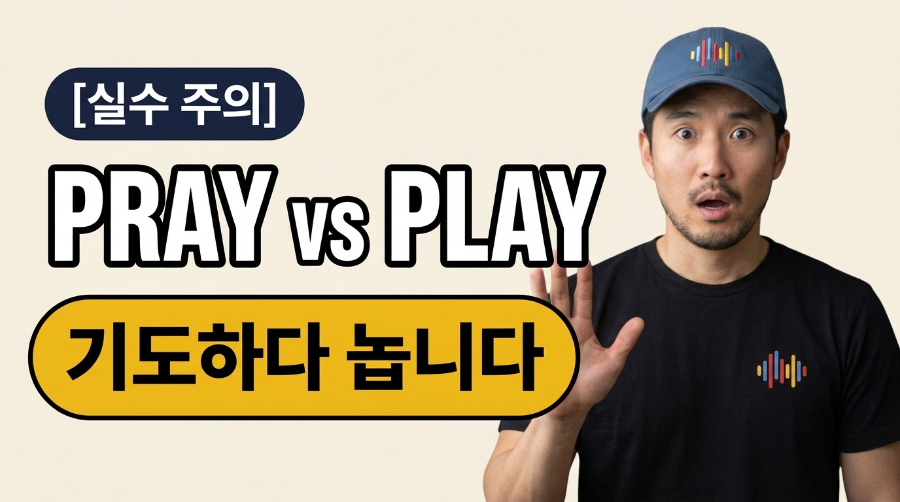

EP26 업로드 패키지
Right와 Light, 둘 다 '라이트'로 읽으셨나요? | 영어 R L 20쌍 반복 듣기
영상 파일: English_Pronunciation_Right_vs_Light_Minimal_Pairs_Listening_Drill.mp4
업로드 체크리스트
[EP26 유튜브 업로드 체크리스트]
영상: English_Pronunciation_Right_vs_Light_Minimal_Pairs_Listening_Drill.mp4 (12분 25초)
⚠️ 올리기 전에 먼저 할 일
1. 썸네일은 반드시 새로 만드세요. 옛 시안에는 영상 길이와 다른 [30분 듣기]가 박혀 있습니다.
videos/ep26-r-vs-l/prompts/thumbnail-prompts.md로 새로 만들어 같은 파일 이름으로 바꿔 넣으세요.
자동 업로드를 쓰면 교체한 뒤 대시보드 대기 큐에서 "이 썸네일 승인"을 눌러야 올라갑니다.
2. 영상 안 금지어는 다시 렌더링하지 않고 그대로 올리기로 했습니다 (2026-11-06). 남은 항목은 아래와 같습니다.
화면: "6회 드릴" 라벨 4곳, 물리법칙 1곳, 0:28 원리 그림의 Retroflex · Alveolar Lateral
음성: "물리법칙" 1번
□ 1. 영상 파일 업로드
□ 2. 제목: title.txt 복사. 테스트를 쓰면 아래 세트대로 등록
A안 메인 · thumbnail.jpg와 세트
B안 실수 주의 · thumbnail-b.jpg와 세트
C안 상식 뒤집기 · thumbnail-c.jpg와 세트
D안 호기심형 · 제목만 시험
□ 3. 설명: description.txt 복사 (챕터 포함)
□ 4. 태그: tags.txt 복사
□ 5. 고정 댓글: pinned-comment.txt 복사 후 첫 댓글로 등록하고 고정
□ 6. 최종 화면: 마지막 10초 (12:14부터), 추천 영상 + 구독 버튼
화면에 그려진 네모와 카드는 눌리지 않는 그림입니다. 스튜디오 최종 화면에서 같은 자리에 요소를 직접 얹으세요.
직전 편: EP25 (공개된 뒤 연결)
□ 7. 재생목록: "[이해하면 쉬운영어] 반복 듣기 정주행"에 추가. 이 재생목록은 아직 채널에 없으니 처음 한 번 만드세요.
□ 8. 자막: 아직 없습니다. subtitles/ 폴더를 만든 뒤 따로 올립니다.
□ 9. 시청자층: 아동용 아님
□ 10. AI 사용 표시: 예 (실사처럼 보이는 AI 배경 영상이 있음. 표시해도 노출과 수익에 불이익이 없다고 유튜브가 안내함)
썸네일




메인 제목
Right와 Light, 둘 다 '라이트'로 읽으셨나요? | 영어 R L 20쌍 반복 듣기
제목 시안 (제목 및 썸네일 테스트용)
A안 · 메인 · thumbnail.jpg와 세트
Right와 Light, 둘 다 '라이트'로 읽으셨나요? | 영어 R L 20쌍 반복 듣기
B안 · 실수 주의 · thumbnail-b.jpg와 세트
Pray와 Play, 혀끝 하나로 기도가 놀이가 됩니다 | 영어 R L 발음
C안 · 상식 뒤집기 · thumbnail-c.jpg와 세트
혀 굴리지 마세요, R과 L을 가르는 건 따로 있습니다 | 영어 R L 20쌍
D안 · 호기심형 · 제목만 시험
미드에서 Right와 Light가 다르게 들렸던 진짜 이유 | 영어 R L 발음
설명
오른쪽 right와 전등 light, 둘 다 똑같이 '라이트'로 읽고 계신가요? 기도하다 pray와 놀다 play도 마찬가지입니다. 한글 ㄹ 하나로 쓰다 보니 둘이 같은 소리처럼 느껴집니다. 그런데 R은 혀를 심하게 굴리는 소리가 아닙니다. ① R: 혀끝이 입천장에 닿지 않는 소리 (접촉 0%) ② L: 혀끝이 윗니 바로 뒤 잇몸에 닿는 소리 (접촉 100%) 20쌍 40단어를 남녀 목소리로 번갈아 반복해서 들어보세요. 문장 7개와 40단어 섞어 듣기까지 이어집니다. 📌 챕터 00:00 Right와 Light, 아직도 둘 다 '라이트'? (도입부) 00:28 혀 굴리지 마세요! [r] 혀끝 허공 0% vs [l] 잇몸 접촉 100% 원리 01:05 Group 1: 자주 나오는 5쌍 (Right/Light, Red/Led, Rain/Lane...) 02:31 Group 2: 필수 동사 5쌍 (Run/Learn, Read/Lead, Ride/Lied...) 03:57 Group 3: 일상 명사 5쌍 (River/Liver, Rock/Lock, Road/Load...) 05:21 Group 4: 자음이 붙은 단어 5쌍 (Pray/Play, Crown/Clown, Grass/Glass...) 06:47 문장 속에서 듣기 7문장 07:42 40단어 무작위 섞어 듣기 (실전 퀴즈) 11:00 1장 요약 치트시트 (스마트폰 캡처용) 11:22 20쌍 앵콜 총복습 & 다음 영상 추천 💡 이렇게 들어보세요 1. 이어폰을 끼고 혀끝이 닿는지 안 닿는지에 집중해 보세요. 2. 11:00 요약 치트시트는 캡처해 두고 틈틈이 소리 내어 연습해 보세요. #영어발음 #영어듣기 #영어리스닝 #RL발음 #영어회화 #자음발음 #이해하면쉬운영어
고정 댓글
☕ 여러분은 Right vs Light, Pray vs Play 중에 어떤 단어가 가장 헷갈리셨나요? 댓글로 헷갈렸던 단어나 오늘 새롭게 귀가 뚫린 단어를 남겨주세요! 📱 11분 00초의 [1장 요약 치트시트]를 캡처해서 스마트폰 앨범에 넣어두고 틈틈이 소리 내어 연습해 보세요. 영상이 도움 되셨다면 '구독'과 '좋아요'로 응원 부탁드립니다! 👍
태그
영어발음, 영어듣기, 영어리스닝, R발음, L발음, RL구분, Right Light, Pray Play, 영어 발음 꿀팁, 영어 쉐도잉, 영어 리스닝 훈련, 기초영어회화, 원어민 발음, 파닉스, 영어공부혼자하기, 이해하면 쉬운영어
챕터
00:00 Right와 Light, 아직도 둘 다 '라이트'? (도입부) 00:28 혀 굴리지 마세요! [r] 혀끝 허공 0% vs [l] 잇몸 접촉 100% 원리 01:05 Group 1: 자주 나오는 5쌍 (Right/Light, Red/Led, Rain/Lane...) 02:31 Group 2: 필수 동사 5쌍 (Run/Learn, Read/Lead, Ride/Lied...) 03:57 Group 3: 일상 명사 5쌍 (River/Liver, Rock/Lock, Road/Load...) 05:21 Group 4: 자음이 붙은 단어 5쌍 (Pray/Play, Crown/Clown, Grass/Glass...) 06:47 문장 속에서 듣기 7문장 07:42 40단어 무작위 섞어 듣기 (실전 퀴즈) 11:00 1장 요약 치트시트 (스마트폰 캡처용) 11:22 20쌍 앵콜 총복습 & 다음 영상 추천